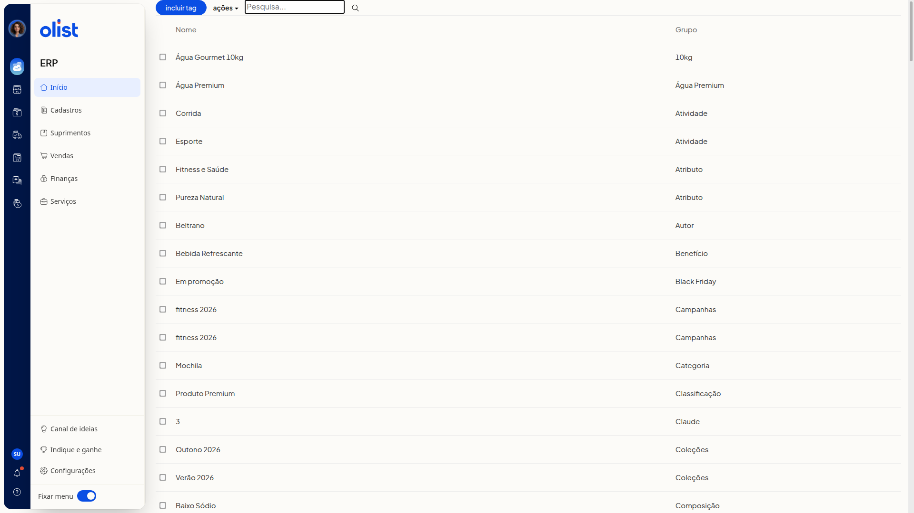
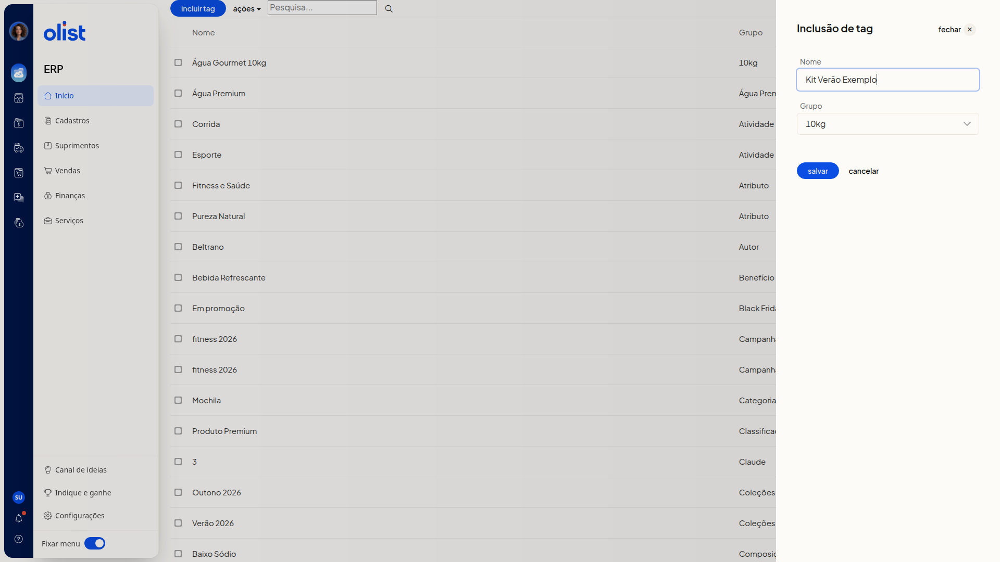

Tags de produtos
Descrição
A página de tags de produtos no ERP da Olist lista as tags nas colunas Nome e Grupo. Você pesquisa pelo campo Pesquisa..., inclui uma tag em um grupo já cadastrado e seleciona linhas para usar o menu Ações.
Para incluir uma tag, use o botão Incluir tag na página de tags de produtos.
Pré-requisitos
- Estar autenticado no ERP, na página de tags de produtos
- Ter a permissão de Tags para acessar a página
- Ter grupos de tags já cadastrados, pois Grupo só oferece grupos existentes
Importante
- Grupo não aceita um nome digitado. Escolha um grupo já cadastrado na lista.
- Novo grupo de tags não cadastra um grupo. Escolher essa opção só seleciona um grupo que já tem esse nome e não abre outro campo.
- Ações não inclui tag. O único item do menu é excluir selecionados.
- Não é possível salvar a tag se já existir outra tag com o mesmo nome no grupo escolhido.
Instruções
-
Confira, na página de tags de produtos, a listagem com as colunas Nome e Grupo, o botão Incluir tag, o menu Ações e o campo Pesquisa....

-
Clique em Incluir tag. O painel Inclusão de tag mostra os campos Nome e Grupo e os botões salvar, cancelar e fechar. Grupo já vem com um grupo selecionado.
-
Preencha Nome e selecione um grupo já existente em Grupo. Os campos Nome e Grupo não são obrigatórios. A listagem não muda enquanto salvar não é acionado.

-
Clique em salvar quando quiser gravar a tag.
Links relacionados
Se precisar de ajuda, fale com o suporte.